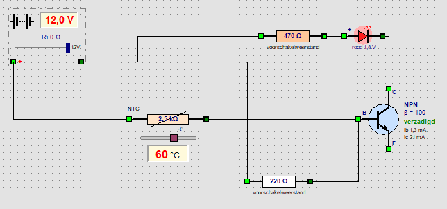

NTC, from the
base to − a 220 Ω resistor. In the collector 470 Ω and a red LED. At 25 °C the LED stays off.
NTC, from the
base to − a 220 Ω resistor. In the collector 470 Ω and a red LED. At 25 °C the LED stays off.Learning path › Electronics › Lesson 41 of 42 · Level: Extended
NTC, from the
base to − a 220 Ω resistor. In the collector 470 Ω and a red LED. At 25 °C the LED stays off.An NTC is a resistor whose resistance drops as it gets warmer. With the slider you set the temperature; the block shows the resistance; the small screen below it shows the temperature.
Here too the NTC and the fixed resistor form a voltage divider, but now the sensor is at the top, on the + side. The base gets the part of the 12 V across the 220 Ω:
Ubase = 12 V × 220 Ω / (RNTC + 220 Ω)

The switching point: the base gets 0.7 V when the NTC has 11.3 / 0.7 × 220 Ω ≈ 3.55 kΩ. That is at about 51 °C. Compare with the night light: there the sensor was at the bottom, and the LED switched on when the sensor's resistance became large. Here it is at the top, and the LED switches on when its resistance becomes small.
Right-click the 220 Ω resistor and choose Kind › series resistor (470 Ω). At what temperature does the LED switch on now?
Already at about 32 °C. With 470 Ω the base gets 0.7 V as soon as the NTC is below 11.3 / 0.7 × 470 Ω ≈ 7.6 kΩ, and it gets there at a lower temperature. The larger the bottom resistor, the lower the alarm temperature.